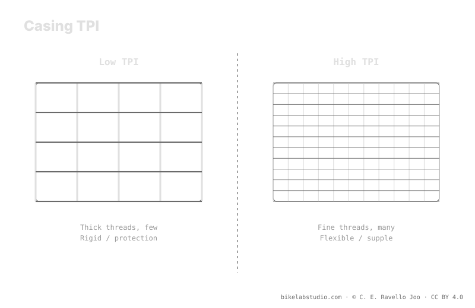

TPI (threads per inch) measures the thread density of the casing. A high TPI gives a flexible, supple casing that conforms to the terrain; a low TPI gives a stiffer casing with more protection. Casing stiffness shifts your starting pressure: a supple casing doesn't start where a stiff DH casing does. TPI describes feel, not absolute quality. The exact pressure value comes from the calculator, because tire pressure is not a number.
Seeing a TPI figure on a sidewall doesn't tell you the tire is good: it tells you how the casing is woven. And that texture decides how much it conforms, how much it protects, and where your pressure starts.
The casing shifts your starting point: the PSI Pressure Calculator gives you your real range by weight, width, rim, and discipline. ▶ Open the PSI calculator
TPI counts how many threads per inch the fabric of the casing has before it is coated in rubber. With a high TPI, those threads are finer and more numerous: the casing is more flexible and supple, wraps around trail irregularities better, and offers less resistance. With a low TPI, the threads are thicker and less dense: the casing is stiffer and tougher, with more body to resist cuts and abuse. On its own, TPI is not a quality score: it is a description of texture and stiffness.

High TPI isn't "pricier and better": it's "more adaptable and more fragile on its own." Low TPI isn't "cheap": it's "harsher and more protected." These are trade-offs, not tiers.
Here is the link to pressure. A supple casing adds little structure on its own: it leans on air —or on inserts— to hold its shape and avoid collapsing against the rim. A stiff or reinforced casing provides its own support, so at the same weight it can run differently than a supple one. That is why the casing shifts your starting point: you don't start in the same place with a light, flexible casing as with a thick-walled DH one. The casing moves the range; it never fixes the number.
TPI describes thread density; the number of plies (layers) describes how many fabrics are stacked. A 1-ply construction uses a single layer: lighter and more flexible, ideal where smooth rolling matters most. A 2-ply stacks two layers: more robust against cuts and pinch flats, at the cost of weight and stiffness. On top of that base, many tires add puncture-protection belts on the sidewall or tread to protect critical zones without turning the whole casing into a brick. That combines the feel of a high TPI with selective protection.
There is no universal TPI. If you ride fast terrain and want conformity and low resistance, a high TPI with targeted protection usually fits. If you punish sharp rock and want durability, a low TPI or a multi-ply casing gives you margin. And remember the casing is one more variable inside the range: weight gives you the center, the casing and terrain tell you where you land. The exact number does not come from the tire sidewall; it comes from crossing all your variables.
Threads per inch of the casing. High TPI = flexible and supple; low TPI = stiff with more protection. It describes feel, not quality.
Neither in the abstract. High conforms and rolls smooth but needs protection; low takes more abuse with a harsher feel. It depends on terrain.
Yes: a supple casing adds little structure and leans on air; a stiff one gives its own support. The casing moves your starting point.
1-ply is one layer, light and flexible; 2-ply is two, more robust against cuts. Many add puncture belts to protect without bulking up.
The casing sets the starting point; the PSI Pressure Calculator closes your real per-wheel range by width, rim, and discipline. ▶ Open the PSI calculator
© 2026 BikeLab Studio. Content under CC BY 4.0: you may copy, translate and publish it, even for commercial purposes. Citation is mandatory. Without attribution, the license terminates automatically (CC BY 4.0, §6.a) and the use becomes copyright infringement: we request the removal of the content and its deindexing. · Design and ownership: Carlos Ravello Joo